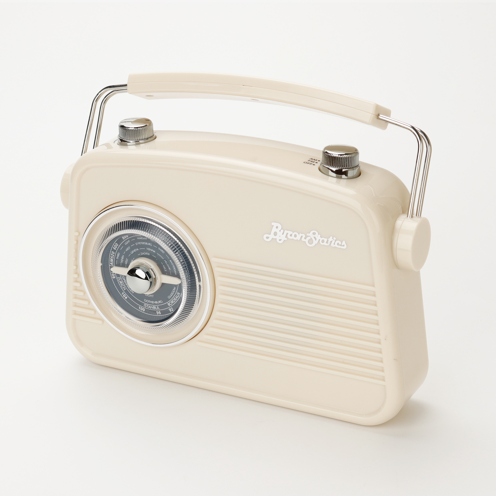
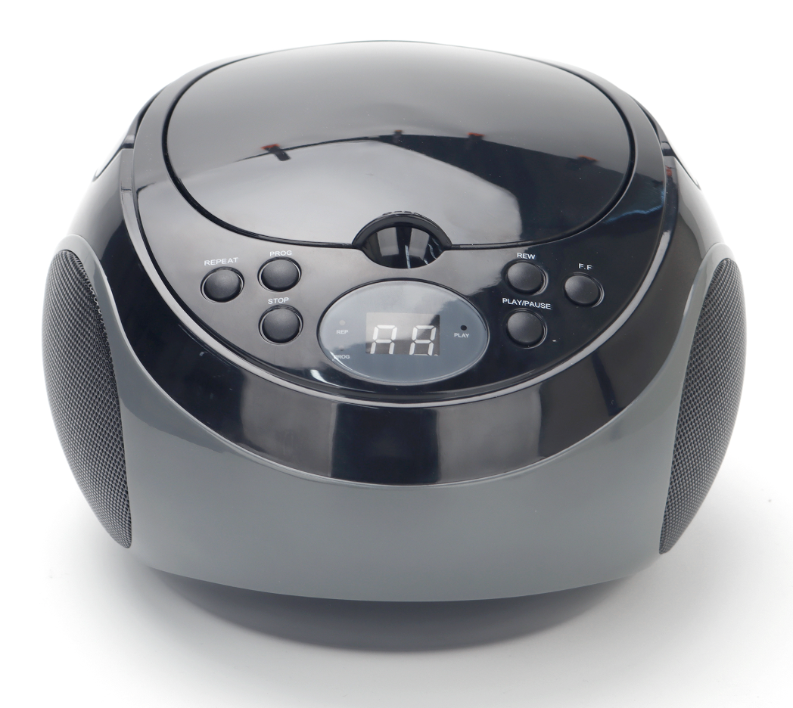
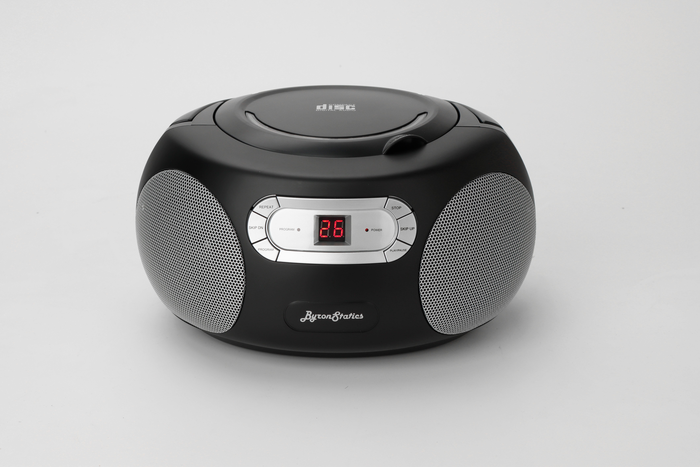
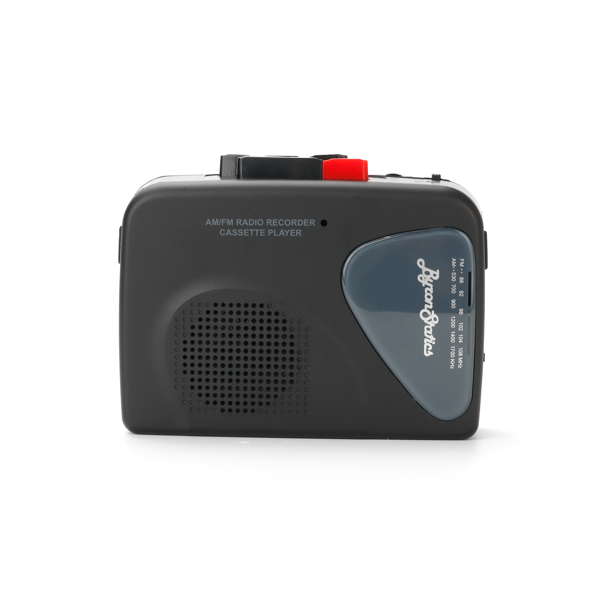
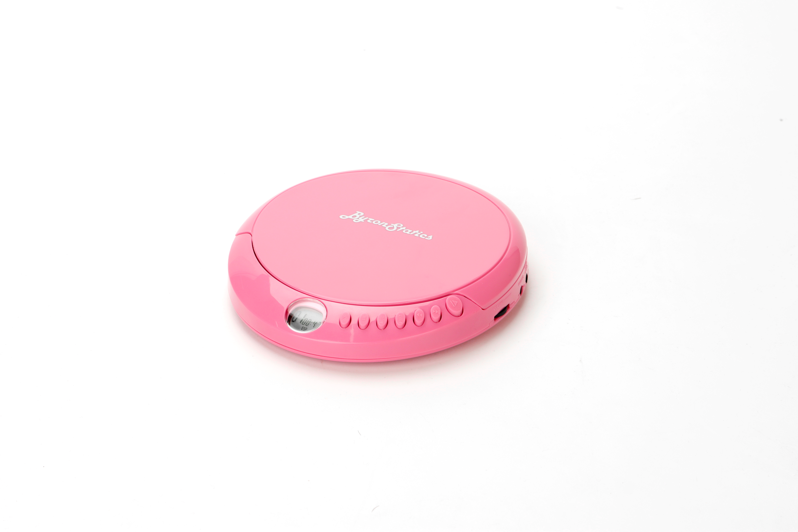

✺ EST. 2026 ✺ CALIFORNIA VIBES ✺
Five totally tubular players. Groovy beats, sunshine sound, and that far out 70s/80s energy.

☼ FEATURED · AM66 ☼
☼ THE COLLECTION ☼
Five iconic players from the golden era of sound.

✺ NO. 1 · BOOMBOX
Round UFO-style CD boombox. Top-load, AM/FM, brass buttons.

✺ NO. 2 · BOOMBOX
Top-load CD boombox. AM/FM stereo, dual 1W speakers, AC/DC.

✺ NO. 3 · CASSETTE
Portable AM/FM cassette recorder with VAS & built-in mic. 3 colors.

✺ NO. 4 · CD PLAYER
Discman-style with 60s anti-skip & 5 EQ. 3 colorways + earbuds.
✺ NO. 5 · RADIO
Vintage AM/FM radio with rotary dial, 4W output, USB-C. 2 colors.
☼ THE VIBE ☼
"Sound from the sunshine era — when music was warm, speakers were big, and every song felt like a drive to the coast."
— THE BYRONSTATICS CREW